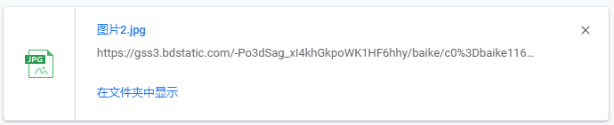
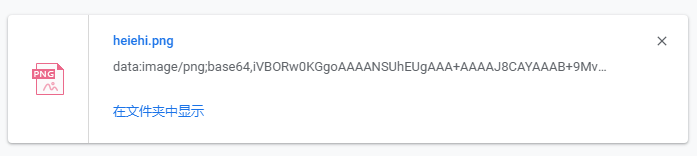

最近的项目有个需求，就是点击按钮下载一个图片。这种下载的做过很多次了，下载过Excel，word，PDF，TXT等等，都是后台给一个链接地址，然后直接打开这个链接地址，浏览器就开始下载了。图片的话，我也是这么做的，没有问题，浏览器能正常的识别下载。但是（凡事都怕有这个但是），这次有点不一样，因为这个图片就不是放在后台的，是我们前端调用华为的OBS上传的，然后我们还要下载这个图片，这样后台就没有办法帮忙了。当然了， 后台也可以先把这个下载到服务器，然后在让我们去下载，但是这有点太绕远了，肯定是不太可行的。于是，就开始查找前端的下载方法。总共找到了三种，分享给大家。不过需要注意的是第二种并没有成功
1.第一种就是后台给一个url，然后打开。这里就不详细的说了，需要后台老兄的帮忙；不过这里补充一下，就是像图片，音乐这类的文件，后台需要单独设置一下，要不然，直接打开的话，浏览器不会执行下载，而是真正的打开了音乐或者这幅图片。
2.第二种就是查到了，网上说这样能下载 <a href="图片地址" download="logo.png">下载图片</a> 也就是给a标签增加一个download属性，但是经过测试，发现这样并不可以。
3.第三种，就比较厉害了，只要浏览器能正常的打开这个图片，然后咱们就能下载。先说一下这个的原理，就是我们点击下载之后，新建一个隐藏的canvas，大小和图片的大小保持一致，然后保存这个数据流，就启动了浏览器的下载。亲测可以下载；
1 function downloadIamge(imgsrc, name) { //下载图片地址和图片名
2 let image = new Image();
3 // 解决跨域 Canvas 污染问题
4 image.setAttribute("crossOrigin", "anonymous");
5 image.onload = function() {
6 let canvas = document.createElement("canvas");
7 canvas.width = image.width;
8 canvas.height = image.height;
9 let context = canvas.getContext("2d");
10 context.drawImage(image, 0, 0, image.width, image.height);
11 let url = canvas.toDataURL("image/png"); //得到图片的base64编码数据
12 let a = document.createElement("a"); // 生成一个a元素
13 let event = new MouseEvent("click"); // 创建一个单击事件
14 a.download = name || "photo"; // 设置图片名称
15 a.href = url; // 将生成的URL设置为a.href属性
16 a.dispatchEvent(event); // 触发a的单击事件
17 };
18 image.src = imgsrc;
19 }
然后在点击按钮的时候，直接执行这个方法，就可以了。如果仔细的观察下载的话，就能发现，咱们自己手动下载保存的图片显示的是这个图片的链接地址：

而我们使用canvas方法下载的图片其实是一个文件流：

可以负责任的告诉大家，这两个是一张图片。